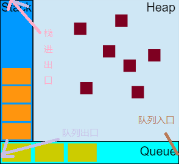

一、参考
https://developer.mozilla.org/zh-CN/docs/Web/JavaScript/EventLoop
https://www.w3.org/TR/html5/webappapis.html#event-loops
https://segmentfault.com/a/1190000006811224
https://blog.csdn.net/lin_credible/article/details/40143961
https://www.zhihu.com/question/36972010
https://www.w3.org/TR/html5/webappapis.html#event-loops
二、let’s go!
(1).盗个图演示下栈和队列

上图很完美的诠释了栈和队列的区别。
- 图中栈呈竖直形状,且顶部开口,代表着栈后进先出的特点。why?只有顶部开口,那么只能从顶部进出啊！
- 图中队列水平横向放置,左侧是队列的出口,右侧是队列的入口,这不正好符合队列先进先出的特点吗？
(2).事件循环
实现方式示例：
123while (queue.waitForMessage()) {queue.processNextMessage()}什么是
event loop？主线程从任务队列中依次取出“任务”去执行,当主线程在执行某个“任务”时,其他“任务”在任务队列里排好队等待,当主线程执行完一个“任务”后才会再度从任务队列里取“任务”,这样一直取–>执行–>取…直到任务队列中没有待执行的“任务”。
- 2.1 其中,任务队列中的任务是什么？
为什么需要
event loop？- 3.1
js运行环境的运行机制奠定了基础 - 明确一点：
js是单线程的！所有任务只能由一个线程(主线程)执行。这里就产生一个思考或者弊端：当主线程正在执行一个很耗时的比如从后台接收大量数据任务时,其他所有任务是不是只能等待主线程把它执行完才能被主线程“临幸”？这样肯定是不行的,一点也不优美。所以接下来就引入了同步异步的概念,而event loop是实现异步的一种机制。 - 3.2 什么是同步异步？
- 同步任务其实就是主线程循规蹈矩按顺序依次执行并能立即得到执行结果的任务。所有同步任务在主线程上形成一个执行栈,栈就像一个竖直容器,顶部开口,任务一个一个的放进去,再一个一个的取出来执行,那么最先放进去的堆在最下面,也在最后被取出执行。关于执行栈可以看：https://www.cnblogs.com/MasterYao/p/5563725.html
- 异步任务其实可以理解为发出调用但是无法立即得到结果,需要进行其他操作才能得到预期结果。
- 当主线程执行某异步任务时,发出调用但是没有立即得到返回值,主线程也不会干等着,这时候异步任务会在一旁默默等待返回值,一旦有返回值便会把回调函数放入对应的任务队列(PS:一个事件循环可能会有多个任务队列,相同任务源的任务会放进同一个任务队列,不同任务源放入不同任务队列。可以看HTML5规范：https://www.w3.org/TR/html5/webappapis.html#event-loops)。
- 所以
event loop机制最大的作用就是把异步任务的回调函数放入主线程执行。
- 3.1
注意点：
- 主线程只有执行完正在执行的任务后才会去任务队列里面取新任务执行,如果没有新任务,那就等待。
setTimeout经常造成一些困惑,其实setTimeout并不是过了多久就执行,而是过了多久就放入任务队列中！setTimeout可能会干扰任务队列中任务的顺序。- 同步任务不会放入任务队列里,直接压入主线程执行栈。
event loop是实现异步的一种机制。